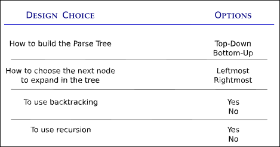

First of all, a correction:
Parsing algorithms are not made for programming languages; they are made for language Grammars.
A Grammar is a set of rules that specify how you can write characters one after the other in order to form valid sentences (that is, valid for that grammar).
For example, the English grammar tells us that you can put the characters ‘y’, ‘o’, ‘u’ one after the other and form a valid token (the word “you”), and that if you also add the characters ‘ ‘, ‘a’, ‘r’, ‘e’, ‘ ‘, ‘g’, ‘r’, ‘e’, ‘a’, ’t’, you will have made a valid sentence (that is, “you are great”). The English grammar defines the English language.
Formal Grammars work in similar way. The confusion arises because Formal Grammars are used in computer science to define new programming languages, and therefore the two definitions often get mixed. But I hope that now the distinction is clear.
Now, let’s answer the question.
A parser is an algorithm designed in order to take a sequence of tokens and decide whether that sequence is valid in the considered grammar.
This answer generates more questions, as it often happens. Here are some:
Where does the sequence of tokens come from?
From a broader point of view, a Compiler takes a stream of characters in input, for example a file with the source code of the program that must be compiled. The first step in the compilation process, called Lexical Analysis, takes care of producing the sequence of tokens from the entire characters stream. Such a sequence is then fed into the Parser, which is the second step of the compilation.
Does the parser only decide whether to accept or reject the tokens sequence? Like a Yes/No answer?
Strictly speaking, that’s correct. A parser can “just” make a decision about acceptance or rejection of the input. However, to do so it builds some data structure (tree-like) and perform some computations on it. Such data structure is also useful in the remainder of the compilation process, and therefore is not discarded by the parser, rather it can be considered its output.
What makes a tokens sequence valid?
It’s all about respecting the rules set by the Grammar. If the tokens are put one after the other in a valid order then the sequence is accepted. However, Grammars are complicated beasts, so the algorithm to decide on the validity of a token sequence is not trivial. If it was, then this article would stop here!
I believe the answers so far give a pretty good understanding of what a Parser is, although a bit too general. Let’s then go into more details.
Different Types of Parsing Algorithms
Writing a parsing algorithm is a bit like an artistic effort. In fact, if you google or maybe search on GitHub, you will find thousands of programmers who have made their own domain-specific parser. The logic and the algorithms of these Parsers do not basically follow any pattern.
Even though you can create a parser from scratch and without knowing much theory, that is not how you should do it. Science and theory exist for a good reason: to guide scientists as well as engineers and practitioners. That’s just my opinion, of course.
Thus, instead of jumping right away into writing some code that may or may not work eventually, I always try to take my time to research the problem and see what the state of the art is.
In the case of Grammar Parsing Algorithms, it turns out that the state of the art algorithms are pretty solid and widely used for a very big class of grammars (more on this last point in a minute).
Let me say it again, in different words:
You should really avoid to write a parser without first studying and understanding the basic parsing patterns that are used in the most famous compilers.
Thus, to understand and to study these algorithms is what we are about to do!

A first classification
Books and theoreticians divide parsing algorithms in two very large groups, at first. I think knowing such a definition is extremely useful: imagine yourself talking with a colleague about some piece of code. Then, you both can use this common language to understand what each is saying to the other.
This first classification is based on how the algorithm builds the parse tree in the internal memory.
First of all, let me repeat the concept: parsers build a so-called parse tree, which is a tree-like data structure whose leaves are the terminal tokens of the grammar, and the intermediate nodes in the tree are nonterminal tokens. Why a tree? This is a very good question, but let me skip it for a minute, and take it back later. Just assume we really want to have it in a tree-like shape.
If you think about a tree-like data structure, there are two sensible ways to build it. One is from the top (root) to the bottom (leaf), and the other is vice versa.
And indeed, parsing algorithms are classified in first instance as:
- Top-down Parsers,
- Bottom-up Parsers.
What does it mean in practice? Well, remember that parsing algorithms works on the grammar definition. Thus, a top-down parser will assume that the first token it sees in the input string is the start symbol of the grammar. Then, it will derive all the other tokens as children of the start symbol.
Bottom-up parsers follow the inverse logic. They will assume the first symbol seen in the input string is a leaf of the tree, and will start building the tree by deciding what is the parent node of that leaf, and so on until they arrive at the root of the tree.
This very simple classification is actually extremely important. In fact, top-down and bottom-up parsers are not different “just” in the way they build the tree. They can actually “do” different things.
In particular, and this is a very important thing to remember, bottom-up algorithms are more powerful, but also much more complex.
What does “more powerful” mean? It means that they can work with a larger set of grammars.
For example, top-down parsers do not work with left-recursive grammar, whereas bottom-up ones do. Left-recursive grammars are those grammars where a production rule for a nonterminal symbol A starts with the same symbol. For example the production rule
A : Abwould make a grammar left-recursive, because to “replace” the symbol A in a string you have to start with another A (followed by a b).
We will see in a minute why top-down parsers get into trouble in such cases.
A second classification
The second classification is based on how the algorithm expands the nodes in the parse-tree.
Generally speaking, expanding a node in a tree means to figure out what are its connections (for example, its children if you are building the tree top-down). In a parse tree this means to understand what production rule must be applied to that node. Let me give a concrete example.
Let’s say we are just starting off the parsing procedure, and want to do it with a top-down approach. Therefore, we would have only one node in the tree, the root, with the start symbol of the grammar. Let’s say this symbol is S.
The grammar is likely to have many production rules for the starting symbol S, for example
S : aAb | Ac | dB.So, the first goal of a top-down parser would be to figure out what’s the right production rule that must be used to expand the root node further down in its child. It can have three children, in the form aAb, or two children in either the form Ac or dB.
Now, when you expand the root node, the parse tree will have either three or two nodes that must be expanded further. The question is: which one to pick up for expansion?
There are two common approaches:
- Leftmost parsers choose to expand the leftmost node in the tree that is not a terminal token.
- Rightmost parsers expand the rightmost node that is not a terminal token.
The natural question, at this point, is whether different expansions rule can lead to different parse trees, or not.
The answer is in general, yes, there can be two different parse trees for the same input string. However, and this is very important, the same string can have multiple parse trees only if the grammar is ambiguous.
Ambiguity is BAD, and in fact grammars designed for programming languages are unambiguous. That means, each string that is valid in that grammar can have one and only one parse tree. And therefore, we should get the same result no matter if we expand the leftmost or rightmost child.
Backtracking or not, that’s the question
A third classification is based on whether the parsing algorithm uses backtracking or not.
I find that knowing about this distinction is very useful to understand articles and other people’s code.
Backtracking is a general programming techniques that (very informally) says: each time you have to make a decision about what to do in the procedure, save the current state, try one of the choices you have and if it fails then simply start over again by resuming the saved state and making a different decision at that point.
In parsing, decisions are all about what production rule to choose when many of them seem fine. Let’s see a concrete example.
Consider the string a = b + 1, and assume you have already parsed it correctly until the = symbol (included). So, the parser must figure out what’s on the right-hand side of this assignment statement.
Your grammar is likely to have production rules about assignments that are similar to the following
assign_stm : ID '=' ID
| ID '=' expr
| ID '=' NUMSuch rule basically says:
an assignment statement can be made in three ways only: an identifier, a = sign and another identifier; an identifier, a = sign and a whole expression; an identifier, a = sign and a number”.
Notice that the above rule can be also written as
assign_stm : ID '=' (ID | exp | NUM).Thus, when you are parsing the input string and arrive at the = sign, it’s time to figure out which of the three alternatives is the right one. If you have no clue about it, then the solution is to save the current parse tree, pick one choice among the three at random and keep going trusting this decision. If it turns out it was a wrong decision (because you reach a dead end in the parsing procedure), then you must backtrack: restore the parse tree you saved, and take a different choice.
Backtracking is a very powerful technique, because it guarantees that you will take the right decision, eventually. Or, in the case of a parser, that there was no right decision and therefore the input string has to be rejected (like in a compilation error).
However, as it often happens, powerful techniques are also expensive. And backtracking is very expensive. Therefore, you might want to avoid it in a parser.
The cost of avoiding backtracking is that you can’t assume the parser will be able to handle all types of grammars. In fact, to avoid backtracking the parser needs to have some hint about what decision to take when multiple production rules are available.
These “hints” the parser need are called lookahead. Simply, the parser algorithm is allowed to look a bit further in the input string, and it can decide what production rule to continue on based on the tokens it sees ahead.
Definitions gets a bit more complex now, but let me try to summarize them.
If a parser only needs to look one token ahead to parse the grammar successfully (that is, to parse all possible input strings), then the grammar is said to be LL(1).
- The first L means leftmost derivation (which I explained above).
- The second L means lookahead.
- The integer in the parenthesis is the number of tokens it needs to look ahead. In general, if the parser needs to look k tokens, then the grammar is said to be LL(k).
LL(k) grammars are obviously a (small) subset of all formal grammars you can make. This is what I meant by saying “backtracking is more powerful”:
- With backtracking you can parse a very large set of Grammars, but it will take a long time to execute.
- Without it, you can parse a restricted set of Grammars, but it will be much more efficient.
Recursion or not, that’s the other question
A final distinction that I want to make, because I find it very useful, is more technical and specifically related to the implementation of the parsing algorithm.
In fact, it’s well known that every recursive algorithm can be implemented with a non-recursive procedure, typically using a stack data structure (Last In First Out - LIFO).
Grammars and Programming Languages are intrinsically recursive, because the production rules uses each other. Thus, the most natural implementation of almost every parsing algorithm is via a recursive scheme. However, it’s often convenient to switch to an equivalent iterative procedure (non-recursive), for memory management purposes.
Keeping in mind this fourt distinctions has helped me quite a bit in studying parsers implementation.
Take-home Messages so far
At this point, I believe repeating a few key concepts is beneficial in order to not lose the thread of the subject, before continuing. First, about parsing in general:
- A Parser is a software able to decide whether or not a string respects a Grammar rules, and hence belongs or not to a Language.
- Parsing is the second step in a compilation process, after the Lexical Analysis. In fact, the input of the Parser is the sequence of tokens generated by the Lexical Analyzer.
- To decide whether to accept or reject the string in input, the Parser builds in memory a Parse-Tree, where the leafs are the terminal tokens of the grammar. This parse tree can be seen as the output of the parsing process (and thus the input of the next compilation step).
I’ve also discussed with you the main differences that can exist in a parser:
- The Parser can build the parse tree from the root to the leaves, in which case is said to be a top-down parser, or vice versa, in which case it’s said a bottom-up parser.
- Bottom-up parser are more general than top-down ones, in the sense that they can handle more types of grammars. On the other hand, top-down parsers have a much simpler algorithmic structure, easier to maintain.
- In building the Parse-Tree, the parser can either expand the leftmost nonterminal node in the tree, or the rightmost. Leftmost is definitely the most common approach.
- Useful Grammars have a lot of production rules, many for each symbol. In such a case, the Parser must decide what is the right production rule to apply to expand a nonterminal node. The most general approach to do this is with backtracking, which however is awfully slow. The (more commonly used) alternative is to write a parser that works for LL(k) Grammars, since with a lookahead of k tokens backtracking is not necessary.
- Although Grammars have a strong recursive footprint, Parsers can be implemented either with a recursive algorithm or with an iterative one. The latter often uses a stack data structure to imitate the recursion in an iterative fashion.
I think that makes enough for an overview of parsing algorithms! Next, I am going to dive much deeper into the nuts and bolts of a parser prototype.
References
My article What is a Programming Language Grammar?
Language Implementation Patterns. A book by Prof. Terrence Parr.
The Dragon Book. Compilers: Principles, Techniques and Tools. Wikipedia page (of the book).